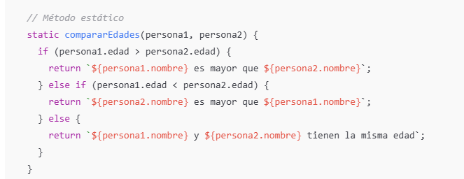
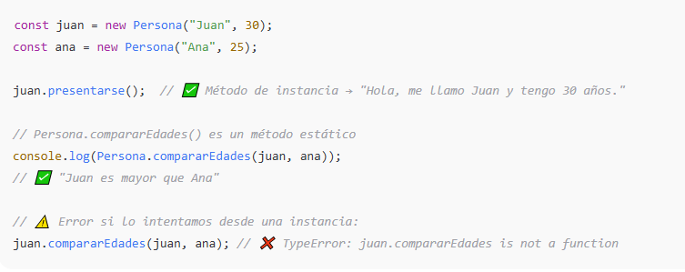
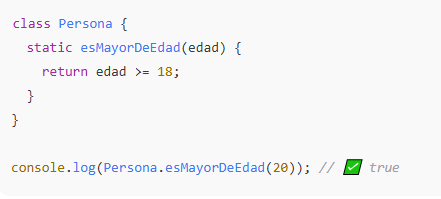
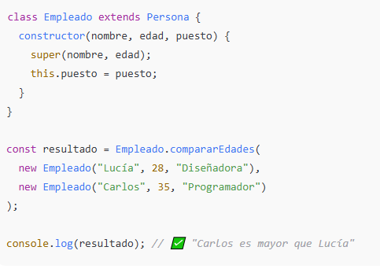

Un método estático es una función que pertenece a la clase en sí misma, no a las instancias (los objetos creados a partir de ella).
-
Se definen con la palabra clave
static. -
Se invocan desde la clase, no desde un objeto.

Un método estático es una función que pertenece a la clase en sí misma, no a las instancias (los objetos creados a partir de ella).
Se definen con la palabra clave static.
Se invocan desde la clase, no desde un objeto.


¿Cuándo usas métodos estáticos?
Usa un método estático cuando:
La operación no depende de una instancia concreta, sino del conjunto de objetos.
Es una utilidad o función auxiliar (por ejemplo, validaciones o cálculos generales).

Herencia y métodos estáticos
Los métodos estáticos también se heredan

Obra publicada con Licencia Creative Commons Reconocimiento Compartir igual 4.0